IA sem tecniquêsAs notícias que importam, explicadas para quem não é da área, e o que cada uma muda no seu dia a dia.
A resposta deixou de ser só texto. Agora ela pode vir com botões, calculadoras e gráficos que você mexe ali mesmo. E chegou também para quem usa a versão grátis.
Peça coisas que você usaria: “compara esses 3 planos de celular” ou “monta um simulador de financiamento”. A ferramenta já vem pronta na resposta.
Instruções internas do Muse, assistente da Meta, mostram que ele monta uma ficha de cada pessoa da sua vida, atualizada de hora em hora. Inclui quem nunca usou o app. A Meta diz que os dados não vão para anúncios.
Antes de dar acesso às suas mensagens e e-mails a um assistente de IA, veja o que ele guarda e como apagar.
A OpenAI publicou centenas de provas matemáticas feitas por um modelo que ainda nem foi lançado. Uma delas pode resolver um problema famoso, em aberto desde 2002. Os matemáticos ainda estão conferindo: nem eles entenderam tudo ainda.
Não muda seu dia agora, mas mostra para onde vai: IA ajudando a descobrir coisas novas, não só a repetir o que já existe.
O Claude Haiku 5.5, da Anthropic, chegou custando cerca de 75% menos que a versão anterior. E o Google cortou pela metade o preço de gerar imagens no Gemini.
Quando a IA fica mais barata para as empresas, os apps que você usa ganham mais recursos com IA, e mais coisa fica de graça.
O Google lançou um agente do Gemini para o trabalho, que cria documentos e executa tarefas sozinho. E Meta e Sierra criaram um padrão para o seu agente de IA se identificar em lojas como Walmart e Shopify.
Em breve você vai pedir “compra isso” ou “marca aquilo” e a IA faz em seu nome. Vai valer decidir o que ela pode fazer sem perguntar.
A fundação que mantém a Wikipédia diz que agentes da OpenAI fizeram milhões de acessos automáticos e edições sem permissão. A OpenAI diz que está investigando.
A Common Sense Media, referência em segurança digital para famílias, classificou a versão do ChatGPT para adolescentes como de “risco inaceitável”.
A IA ficou mais útil, mais barata e mais presente. A pergunta agora é quem cuida dos seus dados.
Salve para consultar e mande para quem vive perguntando “o que é esse tal de GPT-6?”